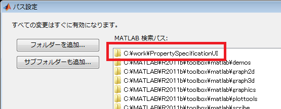
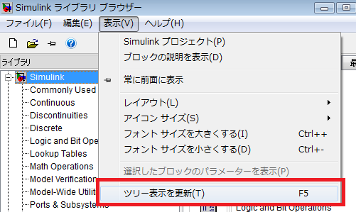
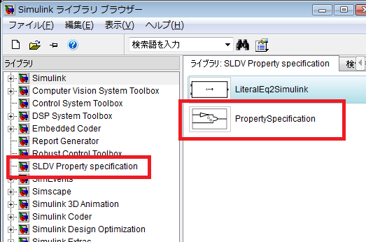

インストール方法と実行方法
(1) PropertySpecificationUI.zip を適当なフォルダに展開
(2) 上記(1)のフォルダをMATLABのパスに追加

(3) 展開したフォルダに含まれる次をMATLAB上で実行
setup_PropertySpecificationUI
(4) Simulink ライブラリブラウザ上から[表示]-[ツリー表示を更新]を選択します。

(5) SLDV Property specification ライブラリ中に「PropertySpecification」ブロックがあることを確認します。 このブロックをモデル中に配置し、ダブルクリックすると、このツールが利用できます。
